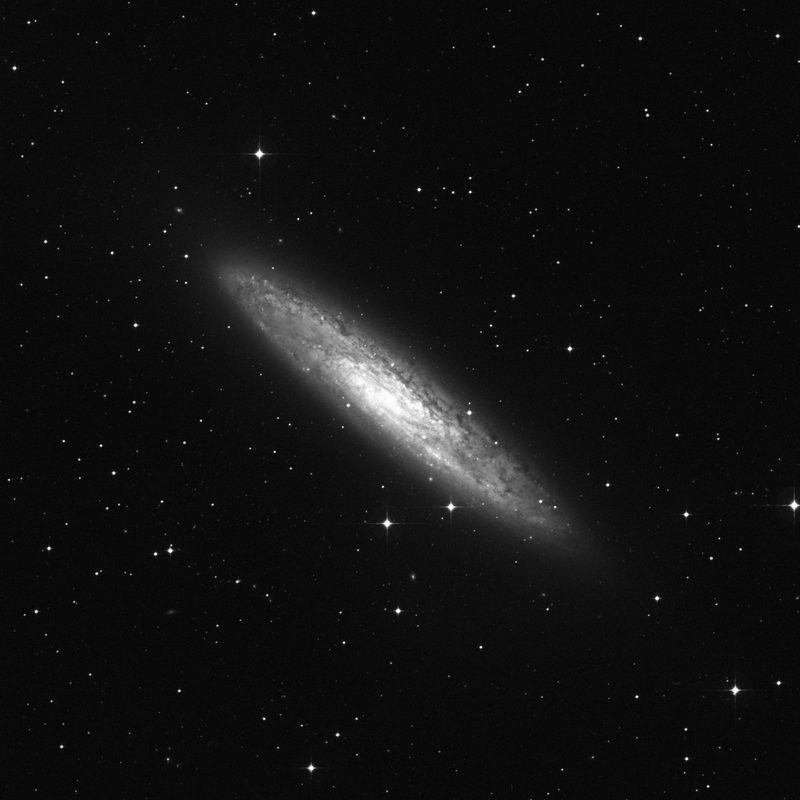
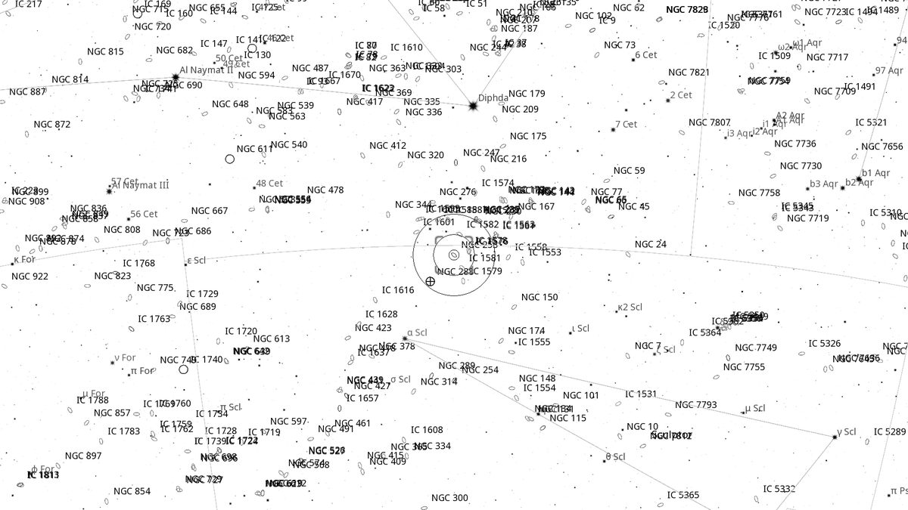
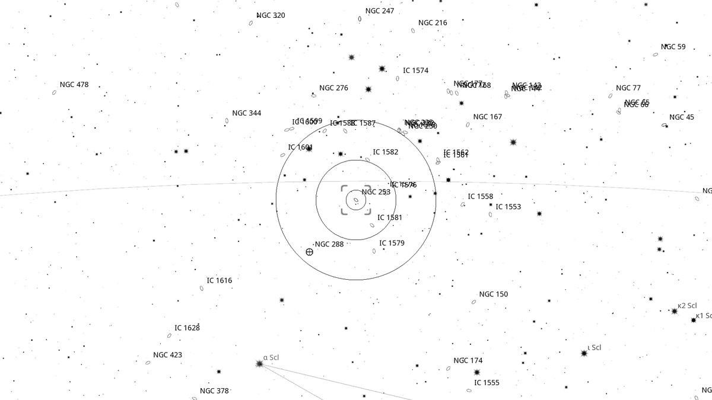
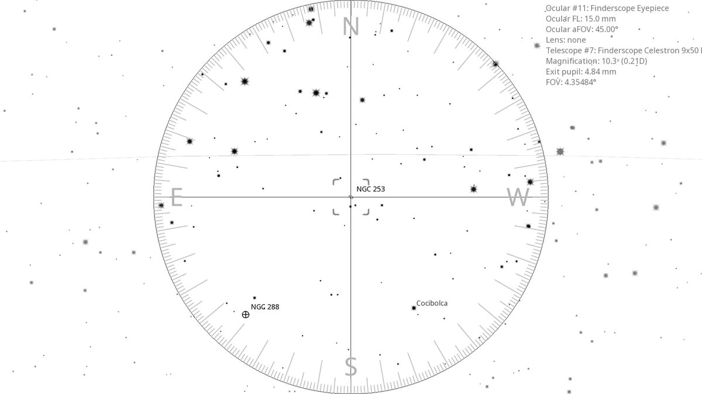
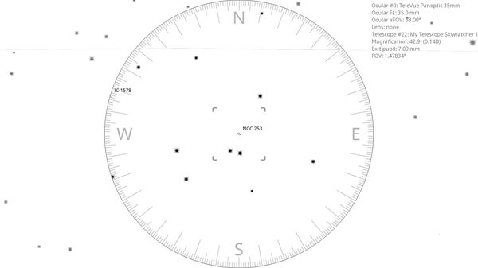

NGC 253 (AGN)
Galaxy in Sculptor
| R.A. | Dec. | Size | Mag | SB | Cnt.St | Type | Distance | Chart |
|---|---|---|---|---|---|---|---|---|
| 00h 47m 31.8s | -25° 17′ 22.2″ | 27.5′ | 8.0 | 13.4 | SAB(s)c | AGN | -- | -- |

Source: POSS-2 UK Schmidt Red (STScI) | Field: 41′ × 41′
Background
NGC 253 is the Sculptor Galaxy — a near-edge-on starburst spiral 11 million light-years away, one of the closest large galaxies outside the Local Group. Member of the Sculptor Group. Famous for its dust lanes and intense star-formation activity in the central regions.
My Observing Notes
44-cm (Club 17.5-inch f/5): A crowd-sourced suggestion. Compared to the view in the 10-inch the extra aperture really teases out structure in this 7.1-mag galaxy. Edge-on spiral centred on a brighter core ( 27'×7'); dust clouds mottle the disk and are easily visible. A large galaxy, taking up most of the field in the 31 mm Club eyepiece.(Saturday, September 2025)
References
Charts

Ultra-wide view (~25° field)

Wide-field view with Telrad rings (4°, 2°, 0.5°)

Finderscope view (9×50 RACI, ~4.4° TFOV)

Eyepiece view — 35 mm Panoptic on 12-inch f/5 (1.6° TFOV)